Topic 7.15 · Coordinates, Graphs and Inequalities · Lesson 1 of 7
Inequalities on a Number Line
An equation pins down one value; an inequality describes a whole range of them, like 'under-12s go free'. Today you read, draw and list the values an inequality allows.
By the end you’ll know…
The symbols compare quantities: < is less than, > is greater than, ≤ is less than or equal to, ≥ is greater than or equal to.
An inequality describes a range of values, not a single one.
On a number line an open circle excludes the value and a filled circle includes it.
An arrow shows the range continuing without end.
By the end you can
G3Represent an inequality on a number line and write the inequality shown by a given number line.
G4List the integer values satisfying an inequality.
Work down the page at your own pace. Write every answer in your book first, then click to check it.
01
Do Now
About 5 minutes
1
What number is halfway between and on a number line?
2
Put these in order, smallest first:
3
Work out
4
Which is greater, or ? Use a number line to explain.
because it lies further to the right.
Remember these?
LAST LESSONA rectangle has length cm, width cm and area cm² Find
LAST WEEKClass A has a mean of and a range of Class B has a mean of and a range of Compare the two classes.
Class A scored higher on average; Class B was more consistent, with the smaller range.
LAST TERMInsert brackets to make true.
LAST YEARWork out
02
Learn
Read each card, then follow the worked examples one step at a time.
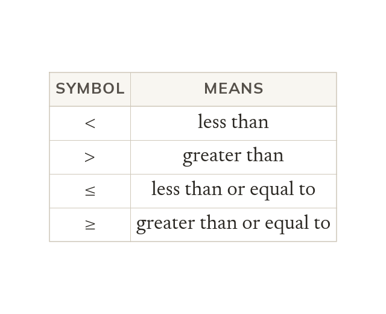
Four symbols
< means less than and > means greater than. ≤ and ≥ include equal to. The narrow end points at the smaller quantity.
Each inequality symbol compares two quantities: < is less than, > is greater than, ≤ is less than or equal to and ≥ is greater than or equal to. The narrow end of the symbol points at the smaller quantity.
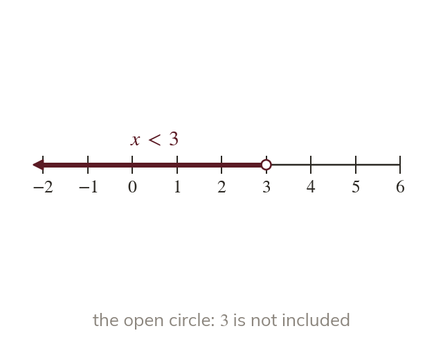
A range, not one value
An inequality like holds for a whole range of values. An open circle at means is not included. The arrow shows the range carrying on.
An inequality such as is true for a whole range of values, not just one. On a number line an open circle at shows that itself is not included, and the arrow shows the range carrying on.
WORKED EXAMPLE A
Show on the number line.
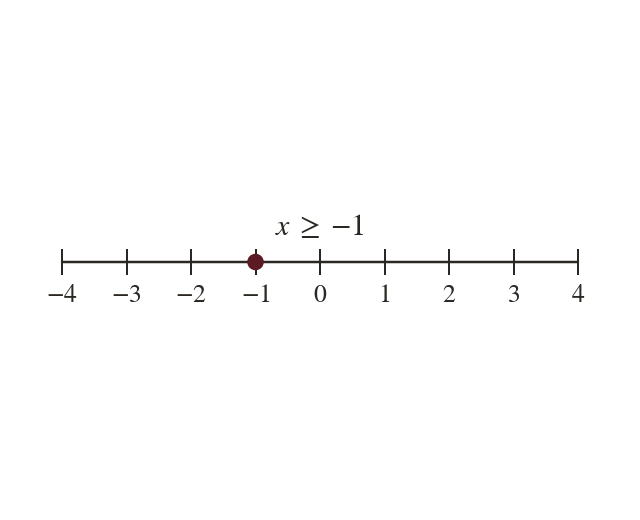
Circlefilled at since is included
Arrowto the right, for every greater value
WORKED EXAMPLE B
Write down the inequality shown.
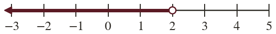
Inequality
YOUR TURN · a
Show on a number line.
An open circle at with an arrow to the right.
YOUR TURN · b
Show on a number line.
A filled circle at with an arrow to the left.
03
Check your understanding
Pick an answer. If it's wrong, the feedback tells you which mistake it was.
Which inequality means "x is less than or equal to 5"?
Yes. "Less than or equal to" is ≤: the line under means "or equal".
Not quite. < leaves out. "Or equal to" needs the line under: ≤.
Not quite. ≥ means greater than or equal. The small end points to :
Not quite. Many values are less than or equal to not just
Which inequality does the number line show?
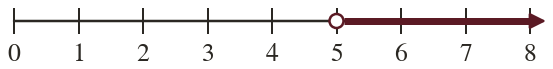
Not quite. An open circle means is not included, so >, not ≥.
Not quite. The arrow points right, to bigger numbers:
Yes. Open circle at arrow right:
Not quite. The arrow shows many values, all bigger than
How is shown on a number line?
Not quite. ≤ includes so the circle is filled in.
Not quite. ≤ means and smaller, so the arrow goes left.
Not quite. Many values are or less, so draw an arrow going left.
Yes. Filled circle is included), arrow left (smaller).
04
Practise
mark as you go
Checkpoint. Show on a number line. Then write the inequality shown by a filled circle at with an arrow to the right.Show your teacher before you go on
1
Show on a number line.
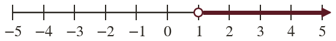
2
Show on a number line.
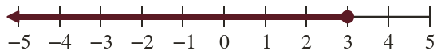
3
Show on a number line.
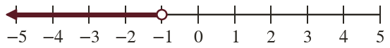
4
Write down the inequality shown.
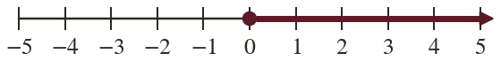
5
Write down the inequality shown.
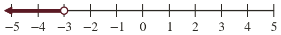
EXT
A number line has an open circle at and an arrow to the right. Write the inequality, and three integers it includes.
E.g. and
05
Learn
Read each card, then follow the worked examples one step at a time.
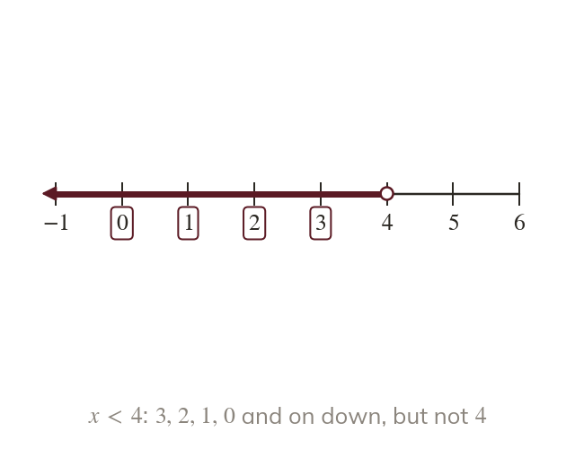
Whole numbers in the range
The integer solutions are the whole numbers in the range. The boundary counts only if the symbol includes it.
The integers that satisfy an inequality are the whole numbers inside its range. The boundary counts only when the symbol includes it: stops at but includes
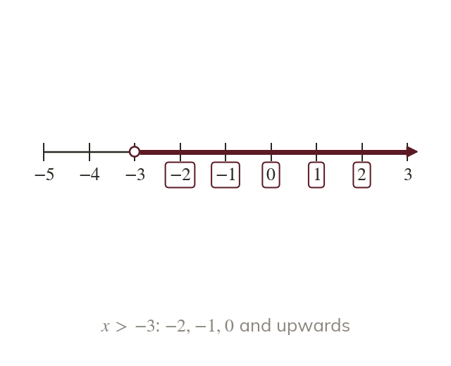
Negative boundaries
Greater means further to the right: is greater than The integers greater than start at not
With negative numbers, greater means further to the right, so is greater than The integers greater than start at not at
WORKED EXAMPLE C
List the positive integers that satisfy
Boundary is included, since ≤ includes it
Positive integers
WORKED EXAMPLE D
Write the three smallest integers that satisfy
Boundary is not included, so start at
Three smallest integers
YOUR TURN · c
List the positive integers that satisfy
YOUR TURN · d
Write the three largest integers that satisfy
06
Check your understanding
Pick an answer. If it's wrong, the feedback tells you which mistake it was.
Which list gives the positive integers that satisfy ?
Not quite. leaves out. So
Not quite. means less than :
Yes. Positive whole numbers less than :
Not quite. Lots of numbers are less than :
What is the smallest integer that satisfies ?
Not quite. > leaves out. The next integer up is
Not quite. is less than You need bigger than :
Not quite. works, but is smaller and still bigger than
Yes. Bigger than means … The smallest is
On a number line, what does an open circle at mean?
Yes. Open circle: is not included.
Not quite. A filled circle means included. Open means not.
Not quite. The circle marks the boundary. The arrow shows the other values.
Not quite. The circle says only whether is included. Direction comes from the arrow.
07
Practise
mark as you go
Checkpoint. Write the four largest integers that satisfy and show the inequality on a number line.Show your teacher before you go on
1
List the positive integers that satisfy
2
List the positive integers that satisfy
3
Write the three smallest integers that satisfy
4
Write the three largest integers that satisfy
5
What is the largest integer that satisfies ?
6
What is the smallest integer that satisfies ?
EXT
How many positive integers satisfy ? How many satisfy ?
: to so : to so
08
Exit ticket
On paper, on your own, then check
1
Explain the difference between and
does not include shown by an open circle; does include shown by a filled circle.
2
Show on a number line.
A filled circle at with an arrow to the right.
3
List the positive integers that satisfy
Finished? Next lesson: 7.15.2 Double Inequalities.
Practise more
After the lesson, or whenever you want more
Dr Frost
Log in, then search for a code to practise that skill.
309aRepresent a one-ended inequality on a number line.
309bInterpret a one-ended inequality represented on a number line.
309fList the integer values represented by an algebraic statement of inequality.